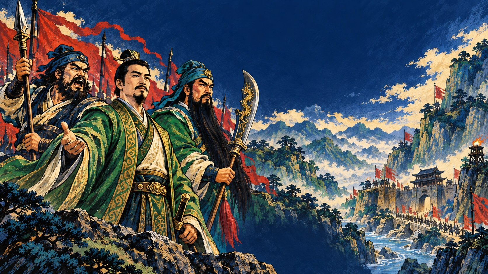
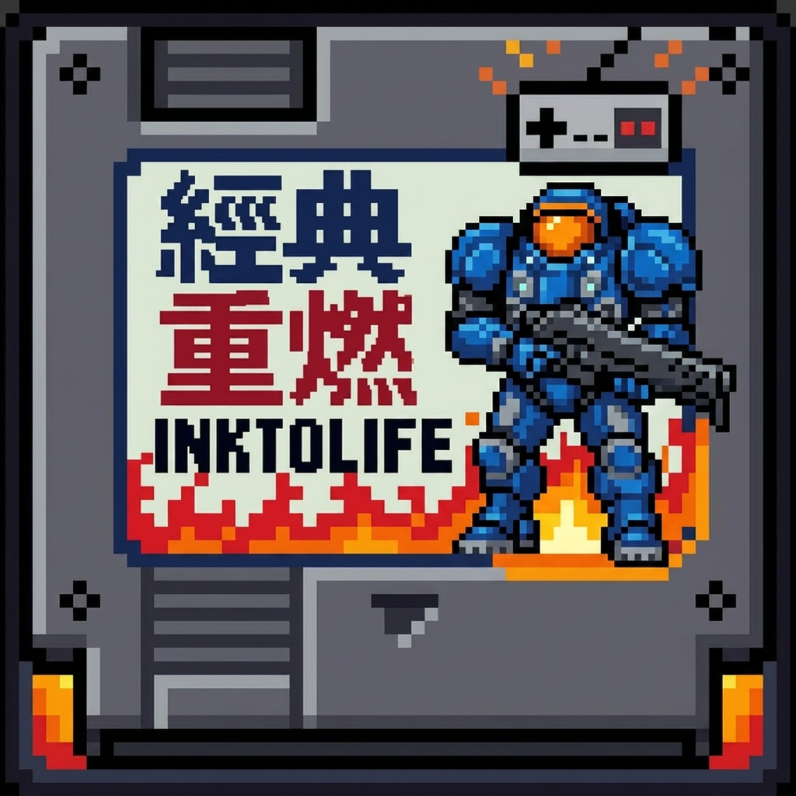

InktoLife & Pandaking联合出品
本关可用军资金500。宝物和消耗品均占携带栏，可在我军间转交，每人最多8件。
战斗中可保存到任意手动档位；自动存档由系统维护。
选择后从该关剧情起点开始，并使用适合该关、能够取胜但不会碾压的均衡等级；远程与辅助通常比前排低1级。连续通关和读档仍继承实际等级，不套用选关等级。第三战与第四战分别为A/B平行路线，第五战在界桥汇合。
这一关还没有战绩，等你来夺头名。
横屏可以同时看到完整战场与攻击、策略、待机等指令。